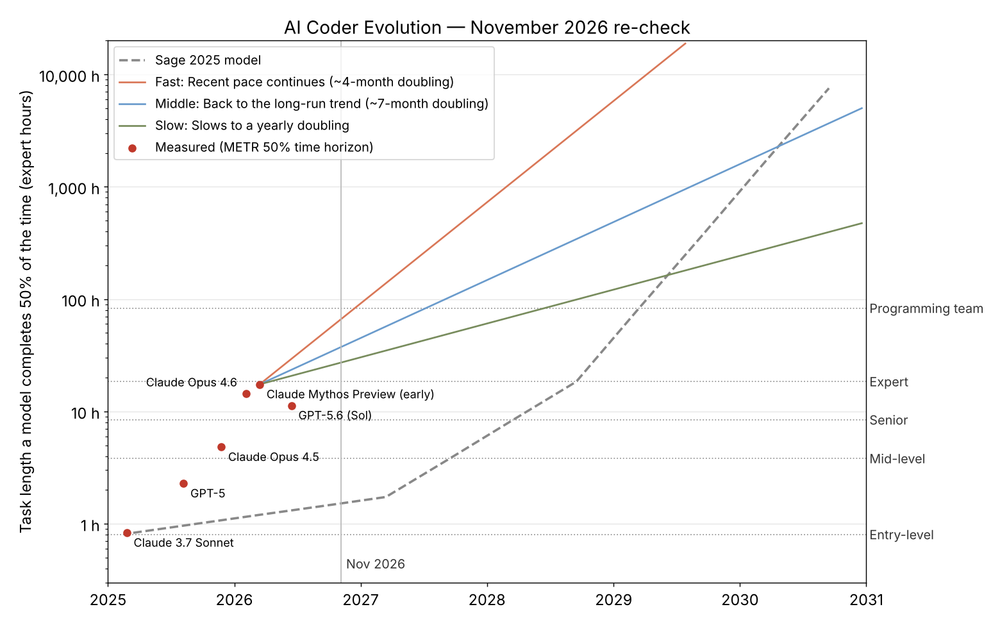

How the comparison works
Sage's capability numbers never had a real-world scale, so they need something real to line up against. The closest is METR's time horizon: the length of a software task, timed on a human expert, that an AI agent finishes half the time.
The two are tied together at one point: Sage's "entry-level programmer" in early 2025 equals about 50 minutes, Claude 3.7 Sonnet's measured horizon at that time. Every other Sage level scales in proportion. A different starting point would move every crossing date; the comparison of growth rates below doesn't depend on it.
When each of Sage's lines was crossed
| Sage level | Task length | Sage forecast | Crossed | By |
|---|---|---|---|---|
| Entry-level | 0.8 h | 2025 H1 | Feb 2025 | Claude 3.7 Sonnet (the anchor) |
| Mid-level | 3.8 h | 2027 H2 | Nov 2025 | Claude Opus 4.5 (about 4.8 h) |
| Senior | 8.4 h | 2028 H1 | Feb 2026 | Claude Opus 4.6 (about 14.5 h) |
| Expert | 18.4 h | 2028 H2 | Unconfirmed | Mythos Preview measured at least 16 h (range 8.5–55 h) |
| Programming team | 82.8 h | 2029 H1 | Not yet | — |
For early 2026, Sage's curve expected about 1.2 hours. The best measured model reached about 17 hours.
How fast it grew
| Growth rate | × per six months |
|---|---|
| Sage: baseline, to 2027 | 1.2× |
| Sage: self-improvement, 2027–28 | 2.2× |
| Sage: quantum, 2028 onward | 4.5× |
| Measured: long-run trend, 2019–24 (doubling every ~7 months) | 1.81× |
| Measured: 2024 to early 2026 (doubling every ~105 days) | 3.34× |
Scoring Sage's 2025 model
- Direction: right
- Capability kept compounding, and 2027 does look like the year AI starts doing much of its own research. OpenAI says it reached its "automated research intern" goal in September 2026, with AI agents logging 3.1 workdays for every human workday in August, and is aiming for a fully automated researcher by March 2028.
- Pace: too slow at first
- The 20% baseline was the biggest miss. Models trained to reason step by step pushed growth past Sage's self-improvement rate in 2024–25.
- Mechanisms: partly wrong
- The quantum boost hasn't arrived; broad quantum speed-ups for AI training are still several hardware generations away. Diffusion models are fast (Mercury 2 in February, Mercury 3 in October 2026) but not yet as capable as the best models.
- What it can't show
- Benchmarks crossed "senior programmer" in early 2026, yet developer job postings rose about 11% in 2026, while employment of developers aged 22–25 has fallen about 20% since late 2022. A task-length score is not a job.
- The ruler ran out
- METR can't reliably measure beyond about 16 hours and has published no new frontier results since May 2026, so newer models (Claude Opus 5 and 5.5, Fable 5.1, GPT-6 Astra) aren't on the chart.
- On sentience
- None of these curves measures awareness. The mid-2027 crossing in the original graph is about coding work, and there is still no agreed test for whether a system experiences anything.
Three paths forward
Projected from the best measurement (Claude Mythos Preview, March 2026), showing the month each task length is reached.
| Task length | Fast ~4-month doubling | Middle ~7-month doubling | Slow yearly doubling |
|---|---|---|---|
| A working week (40 h) | Aug 2026 | Nov 2026 | May 2027 |
| Sage's "programming team" (83 h) | Dec 2026 | Jul 2027 | Jun 2028 |
| A working month (167 h) | Apr 2027 | Feb 2028 | Jun 2029 |
| A working year (2,000 h) | Jun 2028 | Mar 2030 | Jan 2033 |
These are benchmark milestones, not jobs replaced. Even the fast path's first milestone can't be confirmed while the measuring tasks top out at about 16 hours.
What 2026 added
| Date | What happened | What it means for the model |
|---|---|---|
| 24 Feb | Mercury 2 ships, the first diffusion reasoning model (about 1,000 tokens a second). Mercury 3 followed on 19 October. | Diffusion is real but not yet at the frontier. |
| Mar | METR measures Claude Mythos Preview at 16 hours or more, the top of what its tests can measure. | Progress since spring can't be read off the same scale. |
| Apr | Stanford AI Index: employment of developers aged 22–25 down about 20% since late 2022. | The entry-level rung is hit first, Gemini's "experience paradox" from Round 1. |
| Apr | Developer job postings up about 11% year on year; US government still projects 15% growth to 2034. | Most teams still pair AI with people. |
| 19 May | METR's Frontier Risk Report: labs reported no dramatic research speed-ups (Feb–Mar 2026). | Self-improvement hadn't visibly compounded by spring. |
| Jul | SWE-bench Pro tops out near 80% (Claude Mythos 5: 80.3%). | The main coding benchmarks are close to saturated. |
| 6 Sep | OpenAI reports its "automated research intern" milestone; target for a full automated researcher: March 2028. | Sage's 2027 self-improvement step is arriving roughly on schedule. |
| Sep | Quantum computing: error-corrected qubits in the dozens; broad speed-ups for AI training still years away. | Sage's 2028 quantum boost looks the least likely part of the model. |
Data and sources
The data files, the script that builds them and the script that draws the chart are in this folder on GitHub.
- METR: time horizon table (Wikipedia)
- METR time horizons v1.1 data (DataLearner)
- Claude Mythos shows 16+ hour time horizon (OfficeChai)
- Best AI time horizon by August 2026 (Manifold)
- Research acceleration: the view inside OpenAI
- OpenAI hits "automated research intern" milestone (AI Weekly)
- SWE-bench Pro leaderboard (BenchLM)
- Stanford AI Index: junior developer employment
- Developer jobs growing in 2026 (AIxploria)
- Mercury 3 review (The Neuron)
- Quantum AI computing, September 2026 (Skycrumbs)